Caveat lector!
|
Caveat lector!
|
Martine Mazaudon
We describe the implementation of a computer program, the Reconstruction
Engine (RE), which models the comparative method for establishing genetic
affiliation among a group of languages. The program is a research tool
designed to aid the linguist in evaluating specific hypotheses, by calculating
the consequences of a set of postulated sound changes (proposed by the
linguist) on complete lexicons of several languages. It divides the lexicons
into a phonologically regular part, and a part which deviates from the sound
laws. RE is bi-directional: given words in modern languages, it can propose
cognate sets (with reconstructions); given reconstructions, it can project the
modern forms which would result from regular changes. RE operates either
interactively, allowing word-by-word evaluation of hypothesized sound changes
and semantic shifts, or in a "batch" mode, processing entire multilingual
lexicons en masse.
We describe the algorithms implemented in RE, specifically the parsing and
combinatorial techniques used to make projections upstream or downstream in the
sense of time, the procedures for creating and consolidating cognate sets based
on these projections, and the ad hoc techniques developed for handling the
semantic component of the comparative method.
Other programs and computational approaches to historical linguistics are
briefly reviewed.
Some results from a study of the Tamang languages of Nepal (a subgroup of the
Tibeto-Burman family) are presented, and data from these languages are used
throughout for exemplification of the operation of the program.
Finally, we discuss features of RE which make it possible to handle the
complex and sometimes imprecise representations of lexical items, and speculate
on possible directions for future research.
The essential step in historical reconstruction is the arrangement of
related words in different languages into sets of cognates and the
specification of the regular phonological correspondences which support that
arrangement; the well-known means for carrying out this arrangement and
specification is the comparative method (see for example Meillet 1966;
Hoenigswald 1950, 1960; Watkins 1989; Baldi 1990). Words which are not
demonstrably related (via regular sound change) are explained by reference to
other diachronic processes which are beyond the scope of the comparative method
and of this paper. Sound change is first to be explained as a rule-governed
process and other explanations (which invoke more sporadic and less predictable
processes) offered when it is clear that non-phonological forces are at work,
as illustrated in Figure 1. There will always be a number of lexical items for
which no scientific explanation can be advanced: not all words are entitled to
an etymology (Meillet 1966:58).
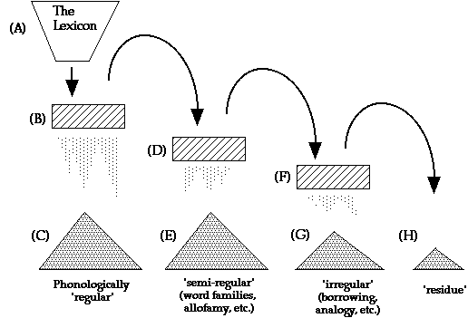
Key:
A.The complete lexicon.
B.Regular sound change (modeled by RE proper).
C.Regular, "expected" reflexes of the ancestor forms.
D.Domain of "protovariation", perhaps due to morphological/derivational
processes; handled by RE with "fuzzy" constituents.
E.Sub-regularities elicited through relaxed constraints (word families,
etc.)[1]
F.Sociolinguistic explanation. Domain of lexical diffusion and other
sporadic processes.
G.Borrowings, analogized forms, hypercorrections, prestige
pronunciations, etc.
H.The "mystery pile": counterexamples and other troublesome
words.
Figure 1: The "Sieve" of Explanation in historical
linguistics
This paper discusses problems and solutions associated with automating
research into diachronic processes acting in (B) in Figure 1 above. Our
solutions are implemented in a program we call the Reconstruction
Engine, hereinafter RE (earlier versions are described in Lowe and Mazaudon
1989 and Mazaudon and Lowe 1991)[2]. RE is a
prototype computational tool which automates a crucial portion of the
comparative method: the process of creating cognate sets and proposing
reconstructions on the basis of observed correspondences between modern
languages. It treats those words of the lexicon which fall into pile C in
Figure 1 above (and to a lesser extent those which fall into pile E). It must
be emphasized that the relative sizes of the piles in Figure 1 are completely
arbitrary. It would not be unusual for the list of problems (H) to be the
largest. Especially in cases where languages are in close contact or are only
distantly related, the regular component of the lexicon may be expected to be
quite small.
RE functions as a "checker" of hypotheses proposed by the linguist. It has no
inferential component in the sense usually used in describing expert systems
(Charniak & MacDonald 1985). Our aim is to verify the internal consistency
of a set of phonological correspondences, created beforehand by the linguist,
against the lexicons of an ensemble of putatively related languages, and to
gauge the extent to which those data are consistent with the given phonological
and phonotactic descriptions (i.e. correspondences and syllable canon).
RE has several features which represent a significant advance in the automated
handling of diachronic data. First, it provides exhaustive treatment of the
data in several dimensions:
*The correspondences and syllable canon form a complete and unified statement
of the diachronic phonology of the languages treated.
Second, RE contains a number of features which make it flexible in handling the
kinds of data realistically encountered in historical research.
2.1
A FEW PRELIMINARY REMARKS ABOUT THE DATA AND TERMINOLOGY
We shall attempt to be precise in our use of the linguistic terminology
related to historical reconstruction: when lexical items, or modern
forms from the various lexicons of individual languages are grouped into
cognate sets on the basis of recurring phonological regularities
(correspondences) they will be referred to as reflexes. The
ancestor word-form from which these regular reflexes derive is called a
reconstruction, protoform, or etymon. Thus, English
father, German Vater, Greek pater, and Sanskrit
pitr- are all reflexes of a Proto-Indo-European (PIE) etymon
reconstructed as something like *p[[dotaccent]]ter (the asterisk
indicates that this word is a reconstruction and not an attested form). The
relations between the constituent phonological elements of etyma and their
modern reflexes are called a sound laws and are usually written in the
form of diachronic phonological rules, for example, PIE *p > English /f/.
/f/ is said to be the outcome of PIE *p in English. Languages which
share a common ancestor are said to be the daughters of that ancestor.
The data on which our study and these examples are based and which are used in
exemplifying the operation of the program are taken from the Tamang group of
the Bodic division of the Tibeto-Burman branch of the Sino-Tibetan family in
Shafer's classification (Shafer 1955), spoken in Nepal (Mazaudon 1978, 1988).
The reconstructed ancestor, Proto Tamang-Gurung-Thakali-Manang, is abbreviated
*TGTM. Four modern tones (numbered [[exclamdown]] to cents) are recognized in
the modern languages and two proto-tone categories (labelled B and
A) are reconstructed. The tones of both reconstructed and daughter
forms are transcribed before the syllable, e.g. Bbap. The eight
dialects used are discussed in detail in Mazaudon 1978. The dialects and their
abbreviations are (as cited in columns 5 to 12 of the table of correspondences
in Figure 9a): Risiangku (ris), Sahu (sahu), Taglung (tag), Tukche (tuk),
Marpha (mar), Syang (syang), Ghachok (gha), and Prakaa (pra).
2.2
SYNOPSIS OF THE RECONSTRUCTION ENGINE
RE implements 1) a set of algorithms which generate possible
reconstructions given word forms in modern languages (and vice-versa as well)
and 2) a set of algorithms which arrange input modern forms into possible
cognate sets based on those reconstructions. The first set implements a simple
bottom-up parser; the second automates database management chores, such as
reading multiple input files and sorting, merging, and indexing the parser's
output.
The core functions of RE compute all possible ancestor forms (using a TABLE OF
CORRESPONDENCES and a phonotactic description, a SYLLABLE CANON, both described
in section 3.1) and makes sets of those modern forms which share the same
reconstructions. Tools for further dividing of the computer-proposed cognate
sets based on semantic distinctions are also provided. The linguist (that is,
the user) collects and inputs the source data, prepares the table of
correspondences and phonotactic description (syllable canon), and verifies the
semantics of the output of the phonologically-based reconstruction process.
RE, qua "linguistic bookkeeper," makes the projections and keeps track
of several competing hypotheses as the research progresses. Specifically, the
linguist provides as input to the program:
*Each form is
completely analyzed. Modern forms which are only partially regular are not
included in cognate sets.
The rest of the paper is structured as follows:
2.0
OVERVIEW OF ALGORITHMS AND DATA STRUCTURES
The parsing algorithm implemented in RE is
bi-directional (in the sense of time): the "upstream"[3] process involves projecting each modern form
backward in time and merging the sets of possible ancestors generated
thereby to see which, if any, are identical. Conversely, given a protoform,
the program computes the expected regular reflexes in the daughter languages.
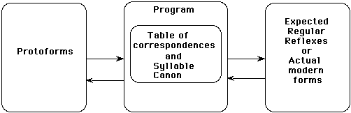
Figure 2: Input-Output diagram of RE's basic projection functions
The process can be done interactively (as illustrated in Figure 3 below) or in batch using machine-readable lexicons prepared for the purpose.
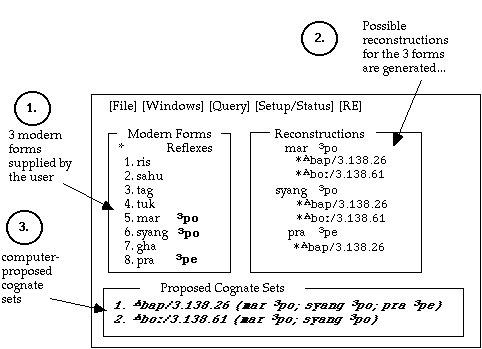
Figure 3: A simple example of interactive "upstream" computation (transcription and languages exemplified are described in section 1.1)
Figure 3 is a representation of the contents of the computer screen after the user has entered three modern words (1). The program has generated the reconstructions from which these forms might derive (2) The list of numbers (called the analysis) following the reconstruction refers to the row numbers in the table of correspondences which were used by the program in generating the reconstructions. In two cases reflexes have more than one possible ancestor. The program has then proposed the two cognate sets which result from computing the set intersection of the possible ancestors (3). The proposed sets are listed in descending order by population of supporting forms.[4]
Conversely, given a protoform, RE will predict (actually "postdict") the regular reflexes in each of the daughter languages. Figure 4 reproduces the results on the computer screen of performing such a "downstream" calculation.
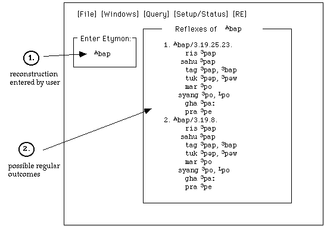
Figure 4: The expected outcomes of *Bbap (a "downstream" computation)
Here the etymon entered by the user (1) produced reflexes (2) through two different syllabic analyses (numbered 1. and 2. in the "Reflexes of ..." window): Bbap as initial /b-/ plus vowel /-a-/ plus final /-p/, and as initial /b-/ followed by rhyme /-ap/. The algorithms used in this process are described in section 3.2.
3.0 PREVIOUS RESEARCH IN COMPUTATIONAL HISTORICAL LINGUISTICS
In order to provide some context for a discussion of our efforts, we first present a brief discussion of the computational approaches to the study of sound change, and review some of the software developed.
Applications of computers to problems in historical linguistics fall into two distinct categories: those based on numerical techniques, usually relying on methods of statistical inference; and those based on combinatorial techniques, usually implementing some type of rule-driven apparatus specifying the possible diachronic development of language forms. The major features of a few of these programs are reviewed briefly below. The programs discussed by no means exhaust the field; the criteria for selecting them is that they have been described in the literature sufficiently for an evaluation, and that for this reason they have come to the attention of the authors. Indeed, the literature in this field is fragmented: starting in the 1960's and 70's a sizable literature on the lexicostatistic properties of language change developed following Swadesh's earlier glottochronological studies (for example Swadesh 1950). On the other hand, only a handful of attempts to produce and evaluate software of the rule-application type (for use in historical linguistics) are documented in the literature (Becker 1982; Brandon 1984; Durham & Rogers 1971; Frantz 1970). In general these programs seem to have been abandoned after a certain amount of experimentation. Certainly the problem of articulating a set of algorithms and associated data sets which completely describe the regular sound changes evidenced by a group of languages is a daunting task. .
To the first class belong lexicostatistic models of language change. The COMPASS module of the WORDSURV program described below belongs to this class (cf. Wimbish 1989). It measures degree of affiliation using a distance metric based on the degree of similarity between corresponding phonemes in different languages. Also to this class belong applications which measure genetic affiliation as a function of the number of shared words in a selected vocabulary set. Any method which depends on counting "shared words," we note, assumes the existence and prior application of a means of determining which forms are cognate; and any such estimates of the relatedness of languages are only as good as the metric which determines which ones are cognate.
To the second class belong programs which model sound change as sets of rules applied to derive later forms from earlier forms, and RE is a member of this class. Examples of programs of this sort are PHONO, being applied to Latin-to-Spanish data (and described below); VARBRUL (by Susan Pintzuk) used to analyze Old English, and two programs used to analyze Romance languages: Iberochange, based on a rule-processing subsystem called BETA, used for Ibero-Romance languages (Eastlack 1977) and one unnamed (Burton-Hunter 1976).
3.1 HEWSON'S PROTO ALGONKIAN EXPERIMENT
The "proto-projection" techniques used by RE were implemented earlier by John Hewson and others at the Memorial University of Newfoundland (Hewson 1973, 1974).[5] The strategy is transparent; as Hewson notes, he and his team decided to "follow the basic logic used by the linguist in the comparative method" (Hewson 1974:193). The results of this research have recently been published in the form of an etymological dictionary of Proto-Algonkian (Hewson 1993).
The program as first envisioned was to operate on "consonant only" transcriptions of polysyllabic morphemes from four Amerindian languages. The program would take a modern form, "project it backwards" into one or more proto-projections, then project these proto-projections into the next daughter language, deriving the expected regular reflexes. The lexicon for this language would be checked for these predicted reflexes; if found, the program would repeat the project process, zig-zagging back and forth in time until all reflexes were found. For example, given Fox /poohke<<samwa/ he cuts it open, the program would match the correct Cree form, as indicated in Figure 5.
LanguageC1C2C3C4ReflexGloss
Foxphk<<smpoohke<<samwa`he cuts it open'
Creepsksmpooskosam`he cuts it open'
Menomini----
Ojibwap<<sk<<snpa<<sko<<saan`he cuts it down'
Ojibwapkk<<snpakkwee<<saan`he slices off a part'
Figure 5: Potential Proto-Algonkian cognates (after Hewson 1974:193-4)
There were problems with this approach. In cases where no reflex could be found, (as in Figure 5 where no Menomini cognates for this form existed in the database) the process would grind to a halt. Recognizing that "the end result of such a programme would be almost nil" (Hewson 1973:266), the team developed another approach in which the program generated all possible proto-projections for the 3,403 modern forms. These 74,049 reconstructions were sorted together, and `only those that showed identical proto-projections in another language' (some 1,305 items) were retained for further examination. At this point Hewson claimed that he and his colleagues were then able to quickly identify some 250 new cognate sets. (Hewson 1974:195). The vowels were added back into the forms, and from this a final list of cognate sets was created. A cognate set from this file, consisting of a reconstruction and two supporting forms is reproduced below (Figure 6).
LanguageFormGlossProtomorphemeFigure 6: Proto Algonkian cognate set (after Hewson 1973 :273)* (ProtoAlg.)PEQTAAXKWIHCINWABUMP (*-AAXKW)
M (Menomini)P3QTAAHKIHSENHE BUMPS INTO A TREE OR SOLID...
O (Ojibwa)PATTAKKOCCINBUMP/KNOCK AGAINST...[STHG]
The Summer Institute of Linguistics (SIL), a prodigous developer of software for the translating and field linguist located in Dallas, Texas, provides a variety of integrated tools for linguistic analysis. One of these tools, the COMPASS module of WORDSURV, allows linguists to compare and analyze word lists from different languages and to perform phonostatistic analysis. To do so, the linguist first enters "survey data" into the program; reflexes are arranged together by gloss, as illustrated in the reproduction in Figure 7.
(1) (2)(3) (4)
GroupReflex Language Abbreviation
0-- no entry --R
AfaDerE
AfaterG
Apadre>4S
BamaiT
Cbapa --MPB
Cbapak--I
Cbapa dah
DtataNwm
Dtatayab
Figure 7: "Properly aligned word forms" for FATHER in WORDSURV(Wimbish 1989:43)
In addition to the a priori semantic grouping of reflexes by gloss, the linguist must also re-transcribe the data in such a way each constituent of a reflex is a single character, that is, "no digraphs are allowed. Single unique characters must be used to represent what might normally be represented by digraphs ... e.g. N for ng." (Wimbish 1989:43). The program also requires that part of the diachronic analysis be carried out before entering the data into the computer in order to incorporate that analysis into the data. For example, when the linguist hypothesizes that "a process of sound change has caused a phone to be lost (or inserted), a space must be inserted to hold its place in the forms in which it has been deleted (or not been inserted)" (Wimbish 1989:43). That is, the zero constituent must be represented in the data itself. The program also contains a "provision for metathesis. ...Enter the symbols >n (where n is a one or two digit number) after a word to inform WORDSURV that metathesis has occurred with the nth character and the one to its right" (Wimbish 1989:43). An example of this may be seen in column 3 of Figure 7. To represent tone, the author notes that "there are at least two solutions. The first is to use a number for each tone (for example 1ma3na). The second solution is to use one of the vowel characters with an accent. ... The two methods will produce different results" when the analysis is performed (Wimbish 1989:44). While the last statement may surprise some strict empiricists (after all, the same data should give the same results under an identical analysis), it should come as no surprise to linguists who recognize that the selection of unit size, the type of constituency, and other problems of representation may have a dramatic effect on conclusions. RE is distinguished from this program in that 1) no a priori grouping of forms by gloss is required (a step which is fraught with methodological problems inasmuch as it requires the linguist to decide a priori which forms might be related), 2) no alignment of segments is required (also a problematic step for a number of reasons), and 3) the constituent inventory is not limited to segments. In passing, the lexicostatistics which are computed are based on the "Manhattan distance" (in a universal feature matrix) between corresponding phonemes from different languages as a measure of their affiliation. The validity of this measure for establishing genetic affiliation is suspect: corresponding phonemes may be quite different in terms of their phonological features without altering the strength of the correspondence or the closeness of the genetic affiliation. Also, the metrics of features spaces are notoriously hard to quantify, so any distance measures are themselves likely to be unreliable. RE computes no such statistics, though some tools exist (and are described below) which might be used in subgrouping.
3.3 DOC: CHINESE DIALECT DICTIONARY ON COMPUTER
DOC is one of the earliest projects to attempt a comprehensive treatment of the lexicons of a group of related languages. DOC was developed "for certain problems [in which] the linguist finds it necessary to organize large amounts of data, or to perform rather involved logical tasks -- such as checking out a body of rules with intricate ordering relations." (Wang 1970:57). A sample dialect record (in one of the original formats) is illustrated in Figure 8. Note that as in the case WORDSURV, the data must be pre-segmented according to a universal phonotactic description (in this case the Chinese syllable canon) which the program is built to handle. The one-byte-one-constituent restriction does not exist, though the (maximum) size of constituents is fixed with the data structure.
At least four versions of this database and associated software were produced (Cheng 1993:13). Originally processed as a punched-card file on a LINC-8, the program underwent several metamorphoses. An intelligent front-end was developed in Clipper (a microcomputer-based database management system) which allows the user to perform faceted queries (i.e. multiple keyterm searches) against the database. The database is available as a text file (slightly over a megabyte) containing forms in 17 dialects for some 2,961 Chinese characters (Cheng 1993:12). DOC has no "active" component: it is a database of phonologically analyzed lexemes organized for effective retrieval.
DialectToneInitialMedialNucleusEndingFigure 8: A Dialect record in DOC (cited from Fig. 7 in Wang 1970)0052192-3LH1WN7
PEKING3LUAN
XI-AN3LUAZ
TAI-YUAN3LUAZ
HAN-KOU3LUAEZ
CHENG-DU3LAN
YANG-SHOU3LUOZ
WEN-ZHO3BLU03
CHANG-SHA3BN0Z
3.4 PHONO: A PROGRAM FOR TESTING MODELS OF SOUND CHANGE
PHONO (Hartman 1981, 1993) is a DOS program which applies ordered sets of phonological rules to input forms. The rules are expressed by the user in a notation composed of if- and then-clauses that refer to feature values and locations in the word. PHONO converts input strings (words in the ancestor language) into their equivalent feature matrices using a table of alphabetic characters and feature values supplied by the user. The program then manipulates the feature matrices according to the rules, converting the matrices back into strings for output. Hartman has developed a detailed set of rules which derive Spanish from Proto-Romance. Besides allowing the expression of diachronic rules in terms of features, facilities are included to handle metathesis. Unlike RE, which handles only one step (at a time) in the development of multiple languages, PHONO traces the history of the words of a single language through multiple stages.
4.0 DESCRIPTION OF DATA STRUCTURES AND ALGORITHMS
We turn now to RE, which represents another step in the application of computational techniques to the problems faced by historical linguists. As will become clear, any computational tools designed to be used by historical linguists must be able to operate in the face of considerable uncertainty. In the course of carrying out a diachronic analysis the linguist is likely to have several competing hypotheses which might explain the observed variation. Data from many sources, varying in quality and transcription, will be compared. The research will proceed incrementally, both in terms of the portions of the lexicons and phonologies treated and in the number of languages or dialects included. RE as a tool helps with only a portion of this task, the problem of creating and maintaining regular cognate sets and the reconstructions which accompany them.
4.1PRINCIPAL DATA STRUCTURES: THE TABLE AND THE CANON
Two data structures (internal to the program) are relevant to the phonological reconstruction, and these are passed as arguments to RE. The table of correspondences represents the linguist's hypothesis about the development of the languages being treated. The columns of the table are (1) a correspondence set number, uniquely identifying the correspondence; (2) the distribution of the correspondence within the syllable structure (i.e. the type of syllable constituent: in this case, Tone, Initial, Liquid, Glide, Onset, Rhyme, Vowel, or Final); (3) the PROTOCONSTITUENT itself; (4) the phonological context (if any) in which the correspondence is found; (5-12) the OUTCOME or reflex of the protoconstituent in the daughter languages.[6] The CONSTITUENT TYPES (T, I, F, L, etc. in column 2) are specifiable by the user. So, for example, C and V could be chosen if no other types of constituents need to be recognized for the research. Note that the table allows for several different outcomes depending on context; the absence of context indicates either an unconditioned sound change or the Elsewhere case of a set of related rules (as discussed below).
(1)(2)(3)(4)(5)(6)(7)(8)(9)(10)(11)(12)Figure 9a: Excerpt from the Table of CorrespondencesNConT*contextrissahutagtukmarsyangghapra
1TB/_C[[radical]][[exclamdown]],X,Ó[[exclamdown]] [[exclamdown]],Ó[[exclamdown]],Ó[[exclamdown]] [[exclamdown]],Ó[[exclamdown]][[exclamdown]]
3TB/_C[[lozenge]] 3,X,Ò 3 3 3 3 3,Ò 3 3
...
93Ikkkkkkkkk
94Ik/_wkõhkkkkk
181FkkÚõ,kõ,kõõõ õ
...
142Lr/p,pæ,b_rrrrrrrr=<<r
169Orrrrrrrrr
...
102Okr/_eÚkkkÊkkkrkr
103Okr/_ukrkrhÊkkkrkr
104Okr/_akrkrhwÊkjkjkrkr
105Okr/_atkrkrhÊkjkjkrkr
106OkrkrkrhÊkkkrkr
...
31R,Vaaaa[[dotaccent]][[dotaccent]][[dotaccent]]aA
186Va/_paaa[[dotaccent]]ooae
The syllable canon provides a template for building monosyllables. It specifies how the constituents of the table of correspondences may be combined based on the (syllable) constituent types (column (2) of the table). Thus, the outcomes for a final /k/ (correspondence 181) and an initial /k/ (correspondence 93) are never confused by the program. The program takes the syllable canon as an argument expressing the adjacency constraints on the constituents found in the Table. For example, the canon for *TGTM, illustrated in Figure 9b, has three SLOTS, each of which has its own substructure: first, a tone (optional, as indicated by the possibility of a zero element); followed by an (also optional) initial element consisting of various combinations of Onset, Glide, Initial, and Liquid; and terminating with either a Rhyme element or a Vowel plus Final consonant. A syllable is composed of zero or more elements from each of these SLOTS. Picking the longest possible combination from each slot produces the maximal syllable permitted by the canon containing six constituents (TILGVF), one from each constituent type except O and R. Similarly, the minimal one has only one constituent (R). Parentheses indicate optional elements, brackets separate sequential slots in the syllable structure.
[T,Ø][O(G),I(L)(G),Ø][R,VF]
T =ToneL= Liquid
O= OnsetR= Rhyme
G= GlideV= Vowel
I= Initial ConsonantF= Final consonant
Ø= Zero
Figure 9b: Syllable Canon in Proto-Tamang
This description, a type of regular expression, provides a shorthand device for expressing several possible syllable structure trees. Indeed, the Proto-Tamang syllable canon is quite complex in this respect, because several hypotheses about syllable structure are encoded in it. For other languages, in which only consonant and vowel need be distinguished in describing syllable structure, a simpler canon (e.g. CV(C)) might suffice. Polysyllabic syllable canons can be expressed and used by the canon in two ways:
4.2.1 Generating proto-projections
Given a form, three steps are required to project or transform a modern form into a set of possible reconstructions or vice versa:
On a first recursive pass RE generates (recursively from the left of the input form) all possible segmentations of the form. That is, starting from the left, the program divides the form into two, and then repeats the process on the right hand part until the end of the form is reached. Essentially, this algorithm implements a standard solution to a standard problem, that of finding all parses of an input form given a regular expression (encoded in this case in the syllable canon and table). As the segmentation tree is created the program checks to see that the node being built is actually specified as an element of the table of correspondences and thus avoids building branches of the tree which cannot produce outcomes (according to the table of correspondences). The pseudocode below (Figure 10) outlines the algorithm.
/* GENERATE: STEP ONE: Tokenize input form */
Tokenize(InputString,TokenList)Figure 10: Pseudocode for tokenizing forms into table constituents/* base case */
if InputString is null then return(TokenList)
/* recursive step */
for i = 1 to the length of InputString
leftside = leftmost i characters of InputString
rest = the rest of InputString
lookup leftside in list of constituents for this table column
if found then
add tokens (i.e. TofC row numbers) for this constituent to TokenList
otherwise
/* abandon this parse */
end if
Tokenize(rest,TokenList)
end for
end Tokenize
Consider for example the segmentations of:
(1)*Bkra head hair
There are eight ways to segment this protoform:
(2)BkraB-kraBk-raBkr-a
B-k-raBk-r-aB-kr-a
B-k-r-a
Of these eight segmentations, only two are composed completely of elements which occur in the protoconstituent column (3) of the table. For each of the valid segmentations, RE constructs a tokenized version of the form, in which each element of the segmented form is replaced with the correspondence or list of correspondences for that constituent in the table. *k, for example, has three possible outcomes (given by rows 93, 94, and 181 of the table of correspondences) depending on its syllabic position and environment.
(3)Segmentations whose elements are ALL constituents of the table:
(a)Segmentation:Bkra
Tokenized form:(1,3)(93,94,181)(142,169)(31,186)
(b)Segmentation:Bkra
Tokenized form:(1,3)(102,103,104,105,106)(31,186)
(4)Segmentations which contain elements NOT found in the table:
SegmentationTokenized form
(c)Bkr-a(?)(31,186)
(d)Bkra(?)
(e)B-k-ra(1,3)(93,94,181)(?)
(f)Bk-ra(?)(?)
(g)Bk-r-a(?)(142,169)(31,186)
(h)B-kra(1,3)(?)
Filtering
Having created and tokenized a list of all valid segmentations, the algorithm traverses each tokenized form, looking up each correspondence row number of each segment in the table and substituting the outcome of that row from the appropriate column of the table. As the output form is being created, the phonological and phonotactic contexts are checked to eliminate disallowed structures, as illustrated in the pseudocode given in Figure 11.
/* GENERATE: STEP TWO: Convert Tokenized form into possible outcomes*/Figure 11: Pseudocode for filtering possible projectionsFilterAndSubstitute(TokenList,ListofPossibleForms)
/* base case */
if TokenList is NULL then return(ListofPossibleForms)
/* recursive step */
for each RowNumber of first segmented element in TokenList
if phonological and syllabic context constraints are met then
for each language in the table
add outcomes for this RowNumber to each output form in
ListofPossibleForms for this language
end if
otherwise
/* do not use this token in building output forms */
end if
end for
remove first segmented element from TokenList
FilterAndSubstitute(TokenList,ListofPossibleForms)
end FilterAndSubstitute
and substituting regular outcomes
The segmentation in (3b) above
(5)B-kr-a(1,3)(102,103,104,105,106)(31,186)
would produce 20 (= 2 * 5 * 2) different outcomes based on the different ordered combinations of its tokens were it not for syllabic structure constraints and phonological context constraints:
(6)
1.102.311.104.1863.106.31With these constraints, however, only one combination is licensed: 1.104.31, because:1.103.311.105.1863.102.186
1.104.311.106.1863.103.186
1.105.313.102.313.104.186
1.106.313.103.313.105.186
1.102.1863.104.313.106.186
1.103.1863.105.31
Substitution
In the final step, the program substitutes the outcomes for each correspondence row in each of the language columns of the table and outputs the expected reflexes. The expected outcome of just the segmentation B-kr-a in Tukche, for example, (Figure 9a, column 8 tuk) is either [[exclamdown]]Ê[[dotaccent]] or ÓÊ[[dotaccent]]. 8 The segmentation B-k-r-a, though a valid segmentation of the input form into table constituents, would fail to produce any reflexes because the phonological context criterion is not met.
This process is performed for each language column in the table, resulting in a list of the modern reflexes of the input protoform. This assumes, of course, that the reconstructed forms are correct, the rules are correct, and no external influences have come into play. By comparing these computer-generated modern forms with the forms actually attested in the living languages we can check the adequacy of the proposed analysis, and make improvements and extensions as required.
4.2.2 Combinatorial explosion and syllable structure
The example given above has only a few possible segmentations. Consider, however, the possible valid segmentations of the *TGTM form *Agrwat hawk, eagle, schematized in Figure 12. There are, of course, a substantially larger number of invalid segmentations. Each token of a segmentation may have a sizable list of possible outcomes. One can see that even relatively uncomplicated monosyllables are capable of causing massive ambiguity in structural interpretation. Indeed, some of the monosyllabic forms in the Tamang database generate nearly a hundred reconstructions, even given the limitations of syllabic and phonological context.
Type of syllable constituent
TILOGRVFStructure
(1)AgrwatT O G V F
(2)AgrwatT O G R
(3)AgrwatT O V F
(4)AgrwatT O R
(5)AgrwatT I L G V F
(6)AgrwatT I L G R
(7)AgrwatT I L V F
(8)AgrwatT I L R
Figure 12: Segmentation of *Agrwat 'hawk, eagle'
4.2.3 Computing upstream and creating a set of cognates
The preceeding discussion (i.e. in section 4.2.1) shows how the table of correspondences can be read from ancestor to daughter (left to right), downstream in the sense of history. It can also be read from daughter to ancestor (right to left), upstream, revealing all the possible ancestors of a given modern segment of a particular language. For example we can see from the excerpt in Figure 9a that Syang /k/ (in column 10 of the table) could derive from either *k- or *kr- (to be read from the column of protoconstituents (column 3) of the table).
By combining, according to the syllable canon, all the possible permutations of *initial, *tone and *rhyme for the initial, tone and rhyme of a modern word, the computer can, using exactly the same procedures as described in section 4.2.1, create a list of its possible reconstructions. If the possible reconstructions of a set of words which are cognate are compared, it must be true that one or more of the reconstructions is the same for all words in the set (assuming, of course, that the words are related via regular sound changes).
In the example in Figure 13, this computation has been done on the modern forms for the word snow in four languages of the TGTM group. Each column contains the possible reconstructions for the modern reflex listed on top of the column. A comparison of the columns (or examination of the Venn diagram below) shows that one reconstructed form, *Agli>= (in row 1), is indeed supported by all the members of the cognate set, and that these four languages provide sufficient data to rule out some of the other reconstructions proposed on the basis of one language alone.[9]
TukcheManangSyangTaglung
centskincentskæ~icentslimcentskæli>=
1.Agli>=Agli>=Agli>= Agli>=
2.AglinAglin
3.AglimAglim
4.Agi>=Agi>=
5.AginAgin
6.Agim
7.Ali>=
8.Alim
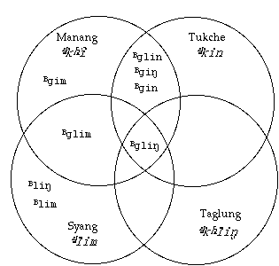
Agli>= snow in Proto-Tamang
(8 different protoforms produced from 4 reflexes)
Figure 13: Selecting the `best' reconstruction from the list of possible reconstructions
4.3 THE DATABASE MANAGEMENT SIDE OF HISTORICAL RECONSTRUCTION
Using the interactive mode of RE described above is a good way to "debug" the table of correspondences and canon. However, RE is most useful as a means of analyzing complete lexicons. The four processes involved in creating reasonable cognate sets from a set of lexicons of modern forms are schematized in Figure 14 below. They are:
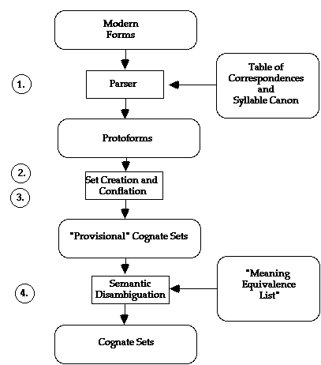
Figure 14: Input-Output diagram of RE's basic batch functions
The algorithms for each of these processes are outlined in the pseudocode in Figures 15a-c. First, the Tokenize and FilterAndSubstitute procedures are performed for each form in each source dictionary.
/* STEP ONE: Backward projection of modern forms
setup tables for the language data file to be processed
get appropriate columns from TofC
set language codes, etc. for output
Initialize list of reconstructions
end setup
for each language_dictionary
for each modern_form from language_dictionary /* i.e. for each word in dictionary */
Initialize TokenList
Tokenize(modern_form) /* see pseudocode for this function above */
Initialize ListofPossibleForms
FilterAndSubstitute(TokenList,ListofPossibleForms) /* upstream! */
Apply Panini's Principle (Elsewhere condition) to select "allowed" reconstructions
check each reconstruction generated against list of reconstructions:
if the reconstruction already exists in the list,
link modern_form to existing reconstruction
otherwise
add reconstruction and link to modern_form into list
end if
end for
end for
Figure 15a: Pseudocode for RE's basic batch functions - first create reconstructions
Next, the list of reconstructions generated is examined and those reconstructions which fail to have sufficient support are eliminated. The remaining reconstructions are retained.
/* STEP TWO: create "pseudo" cognate sets */
for each reconstruction in list of reconstructions
if reconstruction is supported by data from two or more languages then
output reconstruction
output supporting forms
end if
end for
Figure 15b: Pseudocode for RE's basic batch functions - next, create first group of cognate sets
Third, each set is compared with each other set to get rid of those which are subsets of other sets (a type of "set covering problem", discussed in section 5.1 below). This is primarily a data reduction process, and not interesting algorithmically. We have therefore not provided pseudocode describing it. It is, however, NP-hard, and therefore takes a lot of time for a dataset of any size.[10]
Finally, if the linguist is able to provide (on the basis of analysis of previous runs) semantic criteria for distinguishing homophones, the program can separate the sets into sets which contain only semantically compatible reflexes. The method for accomplishing this is described in section 6.1 below.
/* STEP FOUR: semantic processing: splitting and remerging of sets based on semantics */
divide a set into two based on list of glosses selected
for each of the newly created divided sets
if (it is supported by data from at least two different languages) and
(it is not now a subset of some other existing cognate set) then
retain the divided set
otherwise
delete the divided set
end if
end for
/* check the division in the rest of the sets */
for all other sets containing any subset of these glosses
if (there are words in this set with semantically incompatible glosses) then
divide the set (as was done above)
end if
end for
output cognate sets
Figure 15c: Pseudocode for RE's basic batch functions - semantic component
The first step, creating the list of proto-projections, is merely a matter of iteratively applying the reconstruction-generating procedures described in section 4.2.1 to all the forms in the files. The list of protoforms obtained by running all the entries of a modern dictionary backward through the program is saved for later combination with reconstructions generated by words from other languages. The process is illustrated in Figure 16. Note that forms which fail to produce any reconstructions are saved in a residue file for further analysis. In the example below (Figure 16), we see that a Nepali loan word, Tukche /(TM)gar/ house, failed to produce any reconstructions in the proto-language, because there exists a phonological subsystem for Nepali loans in Tukche which does not conform to the phonology of native words (i.e. the phonology described by the table of correspondences). In particular, no voiced initials have survived in Tukche even as allophonic variants. In other cases, forms collected in the check files may indicate a mistake in the table of correspondences, which needs to be corrected to allow the word to reconstruct successfully. Note that the Tukche words in this example are glossed in French (neige "snow", oeil "eye" maison "house"), as they are taken from a French-Tukche dictionary. This is a significant fact, as will be explained below in section 6.1.
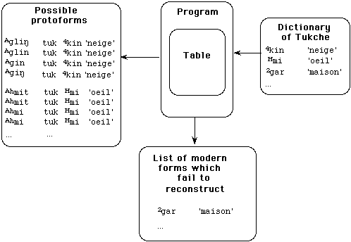
Figure 16: Proposition of protoforms and the residue ("check") file
Combining the lists of reconstructions for several languages into a single sequence and sorting by the proposed reconstructions brings together all reflexes which could descend from a particular reconstruction (Figure 17).
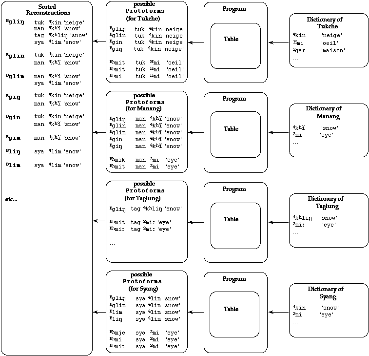
Figure 17: Upstream computation in batch
From this sorted list, RE extracts matching reconstructions, with their supporting forms, and proposes them as potential cognate sets (Figure 18). Ideally, rules would be sufficiently precise for the program to propose only valid sets, and sufficiently broad not to exclude legitimate possibilities. However, there is a certain amount of redundancy and uncertainty in the rules which tend to result in several possible reconstructions for the same cognate set. On the other hand, some forms which do produce possible reconstructions cannot be included in a cognate set because their reconstruction does not match that of any word in the other languages. These isolates (not illustrated) are collected by the program during the set creation process and maintained as a separate list.
The first evaluation measure hypothesized for establishing the validity of a cognate set was the number of supporting forms. The program retained cognate sets when the number of supporting forms from different languages reached a certain threshold value. However, many reasonable cognate sets had forms from only a few languages. The handling of this problem and other problems having to do with the composition of the proposed cognate sets is dealt with in more detail in section 5 below.
*TGTM BbaÚ/3.136.32.
gha 3poleaf
man 3paÚleaf
ris 3paÚfeuille d'arbre
sahu 3paÚleaf
tuk 3paleaf
Figure 18: A "Cognate Set" generated by RE
5.0 THE CONSTITUENCY OF COGNATE SETS
If sound change proceeded in such a way as to perfectly maintain semantic and phonological contrasts through time, the diachronic situation would be quite simple. Phonemes would change into other phonemes but not merge or split.[11] Words would mutate in phonological shape, but would remain distinct from other words in both form and meaning. Making cognate sets in such a situation would be quite straightforward. In reality, neither semantic nor phonological distinctions are not maintained over time. We will examine some of the implications of this situation.
5.1
Many reconstructions may be possible for a given set of cognates
.
The process of "triangulation" (discussed above in section 4.2.3 and in some
detail in Lowe and Mazaudon 1989, 1990, Mazaudon and Lowe 1991) provides a
means for selecting the best reconstruction out of several candidates. If it
were possible a priori to determine which reflexes might fall together
based on the correspondences, it would be possible to preserve just those
reconstructions from which all the reflexes might descend (and discarding the
other reconstructions). This situation is the one illustrated with the words
for snow illustrated in Figure 13 above. However, when entire lexicons are
processed, it is not necessarily possible nor even desirable to attempt to
partition the lexemes into comparable sets to begin with. It is necessary to
generate all possibilities and later to eliminate the undesirable ones through
a sort of competition. Using the number of supporting forms in a cognate set
as the sole or primary criterion for keeping the set was found to be an
inadequate heuristic: some perfectly good sets have only three members, while
others with more members are shaky and in some cases simply wrong.
An example of this competition is illustrated in Figure 19 (another
representation of the data presented in figure 3). Here, as in the
Agli>= snow example (Figure 13), several different cognate
sets composed of the same reflexes but having different reconstructions have
been generated. The reflexes clearly fall together into the same overall
cognate set, but the reconstruction of several of the forms is non-unique: the
reconstruction *BboÚ is supported by forms from Marpha and Syang,
while *Bbap is supported by all four languages. This cognate set, then,
reflects a merger of several smaller sets, as indicated in the Venn diagram.
The Risiangku form disambiguates the reconstructions, showing that *Bbap
should be recognized as the winning reconstruction (it is marked with the *,
other reconstructions which are supported by various subsets of the reflexes
are marked with !*). As an aside, this process of set conflation can only be
accomplished once all the words in all the lexicons are processed. The problem
then presented is a set covering problem (one of the various kinds of
NP-complete problems for which no fast or easy solution exists). In the case of
our Tamang database, in which about 7,000 modern forms yield about 8,000
different reconstructions which have supporting forms from at least two
languages, set conflation takes several hours on our 386-based machine.
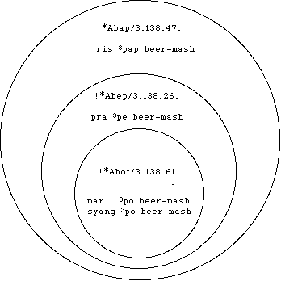
*Bbap/3.138.47.
!*Bbep/3.138.26.
!*BboÚ/3.138.61.
mar 3pobeer-mash
pra 3pebeer-mash
ris 3papbeer-mash
syang 3pobeer-mash
Figure 19: Nested cognate sets
5.2 Other kinds of competition for reflexes
A number of other types of overlapping can occur. And in general, the cognate sets of competing reconstructions do not nest as neatly as they do in the previous example. It is often the case that the cognate sets may merely overlap to some extent. These cases fall into several distinct classes:
First, there exist some overlapping sets in which neither set is a proper subset of the other; the reflexes fit semantically, so the problem is one of reconciling the reconstructions. Figure 20 illustrates the problems which arise when semantically compatible reflexes support different reconstructions.
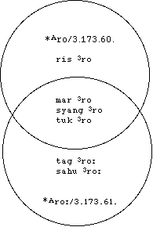
*Bro/3.173.60.
mar 3rofriend
ris 3rofriend
syang 3rofriend
tuk 3rofriend
*BroÚ/3.173.61.
mar 3rofriend
sahu 3roÚfriend
syang 3rofriend
tag 3roÚfriend
tuk 3rofriend
Figure 20: *Bro(Ú) `friend'
This particular situation results from an uncompensated merger (of length) which is now in progress: the length distinction appears to be on its way out in the Risiangku dialect (abbreviated "ris" in Figure 20). This explanation is based on knowledge of the language and an internal analysis of its phonology. At this time it is not clear what algorithm (if any) could be used to sort out cases like these.
A similar but more complicated situation can be seen in Figure 21 below. Here not only does the free variation in vowel length generate additional possible reconstructions, but those dialects where final consonants have been lost permit the reconstruction of variants with a final stop as well. However, the form from the Risiangku dialect, which normally preserves finals, cannot reconstruct (according to the table) to either the short vowel or stopped rhyme, and so another cognate set supporting a long vowel reconstruction is created.
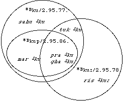
*Aku/2.95.77.
sahu(TM)kunine
tuk(TM)kunine
!*Akup/2.95.86.
gha(TM)kunine
mar(TM)kunine
pra(TM)kunine
*AkuÚ/2.95.78.
gha(TM)kunine
pra(TM)kunine
ris(TM)kuÚnine
tuk(TM)kunine
Figure 21: Aku(Ú) `nine'
The processing described above produces cognate sets which when examined are often found wanting. For example, homophones may be conflated in the same set though they can be derived from different etyma. Also, small irregularities in the data, which may be partially understood by the linguist, may cause forms to fail to reconstruct into the set in which they plausibly belong. We discuss below extensions to RE which deal with some of these problems.
6.1 CONSTRAINING COGNATE SETS: INCORPORATING SEMANTICS
Note that we have nowhere mentioned semantics in the backward computation process: in its search for new cognate sets, the algorithm works strictly on form, not on meaning. Indeed, one of the strengths of RE is that it initially ignores the glosses altogether, operating strictly on the forms themselves. This approach has the advantage of letting a set like *BbaÚ (shown in Figure 18 above) be created in spite of the fact that two different metalanguages (French and English, as illustrated in some of the earlier examples) are used in the data files for the glosses; meaning is not being taken into consideration in creating the set. However, in cases of homophony in the protolexicon (like *Bbam, shown in Figure 22) it is undesirable to conflate all reflexes which support the same reconstruction. Here we can see that words belonging to at least two different etyma (shoulder/thigh vs. soak/wet) are mixed into a single proposed etymon.
TGTM *Bbam/3.136.53.
gha 3p~aÚthigh
tagXbam-bato soak
ris 3pamépaule
ris 3pam mouiller, tremper
sahu 3pamshoulder
tuk 3pomwet (v.i.)
Figure 22: Sample of comparative set proposed by RE
(without semantic component)[12]
Besides allowing incompatible forms within a cognate set, a lack of semantic differentiation permits the creation of some spurious cognate sets, as is illustrated in the Venn diagrams in Figure 23. The set supporting the three reconstructions BbeÚ, Bbet, and Bbat should be eliminated and the reflexes permitted to migrate to the cognate set to which they are semantically related. Were some means available to specify in this case that no set could contain reflexes meaning both wife and beer-mash, the superfluous middle set and the overlap it causes would be eliminated (and the reconstructions would be listed under the wife set of which their supporting reflexes form a proper subset in the same way as depicted in Figure 19).
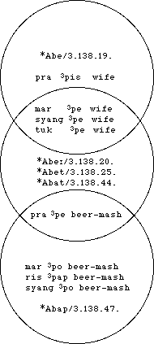
*Bbe/3.138.19.
mar 3pewife
pra 3pi[[perthousand]]wife
syang 3pewife
tuk 3pewife
*BbeÚ/3.138.20.
*Bbet/3.138.25.
*Bbat/3.138.44.
mar 3pewife
pra 3pebeer-mash
syang 3pewife
tuk 3pewife
*Bbap (only the largest subset from
Figure 19 above is used here)
Figure 23: *Bbe and *Bbap `compete' for reflexes
General theories of semantics and semantic shifts are not yet sufficiently developed to be used as an a priori reference framework to constrain the search for cognates.[13] Moreover, using such a framework would preclude the possibility of discovering any new semantic relationships which might be specific to the linguistic group or the linguistic area under study. So we do not wish to constrain the program at all in its first pass through the data in search of cognate sets. On subsequent passes though it would be convenient not to repeatedly encounter putative cognate sets which contain semantic discrepancies. It should be noted in passing that semantic discrepancies should not be confused with semantic distance.
In order to separate incompatible etymological sets, we devised an ad hoc system of "semantic tagging" using a structure we call an "semantic formula." These are bracketed lists of glosses specifying which glosses are semantically compatible and so might be found glossing reflexes in the same cognate set. The formalism used is as follows:
(7)[G1,G2, ... Gn]
"Extract sets which contain any gloss G1 to Gn and eliminate from those sets reflexes with any other gloss. Eliminate any sets which as a result have too few members or become subsets of other sets."[14]
(8)[G1,G2, ... Gm] [Gm+1,Gm+2, ... Gn] ... [Gp+1,Gp+2, ... Gq]
"Divide any set which contains any of the glosses G1 to Gq into sets each of which contains reflexes which
* contain glosses only from one of the subsets [G1,G2 ... Gm], [Gm+1,Gm+2 ... Gn], etc.; but
* retain any reflexes which are NOT specified in any of the subsets.
Eliminate any sets which as a result of the division have too few members or become subsets of other sets."
Some examples of such semantic formulas are:
(9)[SHOULDER, THIGH, ÉPAULE] [MOUILLER, SOAK, TO SOAK, TREMPER, WET (V.I.)]
(10)[BEER-MASH] [WIFE]
(11)[ANSWER, DIRE, REPLY, SAY, TELL, TO SAY]
(12)[FEUILLE D `ARBRE, LEAF, SMALL LEAF]
etc...
Specifically, these lists identify words in the specific language data sets being processed which are homophonous or might have homophonous reconstructions. They also bring together glosses from different languages which should be equated for purposes of diachronic comparison.
The semantic formulas are created based on examination of the initial sets proposed by the program. On subsequent passes through the data, RE can be instructed to take semantics into account and (by processing a file containing these lists) divide sets of potential cognates according to the semantic formulas.[15] The result is that reflexes which would otherwise fall together into one semantically incompatible cognate set can now be differentiated on the basis of meaning and separate sets can be created (see Figures 24 & 25 below). The set conflation process described in sections 4.3 and 5.1 can be applied after this differentiation, giving a more reasonable list of cognates.
*BbaÚ/3.136.32.
gha 3poleaf
man 3paÚleaf
ris 3paÚfeuille d'arbre
sahu 3paÚleaf
tuk 3paleaf
Figure 24: Sample of comparative cards proposed by RE (with semantic component) No separation (all glosses found in the same semantic formula, (12) above)
*Bbam/3.136.53.
gha 3p~aÚthigh
ris 3pamépaule
sahu 3pamshoulder
*Bbam/3.136.53.
ris 3pammouiller, tremper
tagXbam-bato soak
tuk 3pomsoak
tuk 3pomwet (v.i.)
Figure 25: Sample of comparative cards proposed by RE (with semantic component) A set (exemplified in Figure 22) divided using semantic formula (9) above
This device is presently conceived of as a simple tool to reduce noise in the output, but the semantic formulas might be studied later for an analysis of semantic shift in the particular group of languages. Note that the gloss lists are created from and therefore specific to the particular language data sets and glossing metalanguages used.
6.2 EXTENSION TO ALLOFAMIC[16] FAMILIES AND SYSTEMATIC IMPRECISION IN THE TABLE OF CORRESPONDENCES
As has often been noted and deplored, irregular sets of quasi-cognates, or simple groups of look-alikes are a necessary evil of comparative linguistics.[17] If we discarded immediately all sets that are not absolutely regular according to the rules of phonological change already uncovered for the language group, we would stand no chance of ever improving our understanding of the facts. Using a computer to mechanically apply a set of rules to the data implies that we believe to a large extent in the regularity of sound change. But the comparative method itself implies such an assumption. This does not mean that we cannot also admit that "each word has its own history", when we take into account competing trends or influences on the languages. This flexibility towards irregularity has been incorporated everywhere in the computing mechanism.
One example of this flexible approach is evident in examining the table of correspondences. Turning back to the table excerpt (Figure 9a) notice the presence of multiple outcomes separated by commas in the columns of modern outcomes (columns 5-12). These mean that we do not know yet what the regular outcome of a given change is. Question marks are also allowed, in which case the program can (with the proper switch settings) borrow the outcomes from adjacent languages. Neither of these conventions should remain in the table of correspondences when the analysis of the group of languages is completed. But, as a working tool, the table of correspondences tolerates them, and they do not hamper the functioning of RE.
6.3 "FUZZY" MATCHING IN THE TABLE OF CORRESPONDENCES
We can also reduce some of the specificity of the rules in the table of correspondences in a controlled way in order to produce "allofam" sets or "irregular cognate" sets. These cognate sets are composed of reflexes which are irregular only by one or two features specified as parameters by the linguist. This is accomplished using a "fuzzy file" in which elements of the table of correspondences are conflated, allowing the linguist to systematically relax distinctions between segments. In Figure 26, distinctions in tone and the mode of articulation at the proto-language level (symbolized by TGTM) are being ignored in order to concentrate on patterns of correspondences between rhymes and between initial points of articulation.
TGTM X=A,B
TGTM G=k,kæ,g
TGTM GR=kr,kær,gr
TGTM GL=kl,kæl,gl
TGTM GW=kw,kæw,gw
TGTM GJ=kj,kæj,gj
...
TGTM P=p,pæ,b
TGTM PR=pr,pær,br
TGTM PL=pl,pæl,bl
TGTM PW=pw,pæw,bw
Figure 26: A "Fuzzy file"
The "fuzzy file", which states that TGTM proto tones B and A should be equated to the "cover symbol" X , and that TGTM *k, *kæ, and *g should be conflated into *G, a velar stop, unspecified for aspiration and voicing. Similar conflations are stated for *p, *pæ, *b, and so on.
The result of conflating certain segments is to bring together certain reflexes which would otherwise fail to be included in cognate sets. Figures 27a and 27b illustrate how this procedure brings reflexes which are tonally irregular into the appropriate cognate sets for further study. In Figure 27a, an "irregular correspondence" (that is, a lack of a correspondence where one might be expected to exist) results in forms from Tukche and Ghachok being left out of the cognate set. With a "fuzzy" value for the tone (illustrated in part B of Figure 27a), the two aberrant forms fall into place.
A. Without "Fuzzy" ConstituentsB. With "Fuzzy" Constituents
reconAglaÚreconXGLaÚ
analysis4.117.32.analysis4.117.32.
analysis3.116.32.
marcentsljaplacemarcentsljaplace
pracentskæjaplacepracentskæjaplace
sahucentsklaÚplacesahucentsklaÚplace
syangcentsljaplacesyangcentsljaplace
tagcentskælaÚplacetagcentskælaÚplace
gha 3~o place
tuk 3kjaplace
Figure 27a: *BglaÚ ~ *AglaÚ
In Figure 27b, the features conflated are tone and voicing.
A. Without "Fuzzy" ConstituentsB. With "Fuzzy" Constituents
reconBbapreconXPap
analysis3.136.46.analysis3.136.46.
analysis2.135.46.
mar 3pobeer-mashmar 3pobeer-mash
pra 3pebeer-mashpra 3pebeer-mash
ris 3papbeer-mashris 3papbeer-mash
syang 3pobeer-mashsyang 3pobeer-mash
gha(TM)paÚ beer-mash
Figure 27b: *Apap ~*Bbap
6.4 DIRECTIONS FOR FURTHER DEVELOPMENT: PHONOLOGICAL RESEARCH USING RE
When the table and canon are "complete," that is, when the linguist is satisfied with the contents of the cognate sets and "residue" files created by RE, the table and canon can themselves be subjected to further study. The table, for example, is a compact statement of the sound changes exemplified in the set of data begin studied. Indeed, these sound changes encode linguistic generalizations waiting to be teased out by the linguist.
6.4.1 Subgrouping and Typology
The table of correspondences and syllable canon contain a considerable amount of information about the relationships among the languages. Analysis of the table shows which languages share features and innovations and where they differ. Such analysis could be useful to produce a more refined characterization of the genetic relationship among the languages.
On one hand, the table could be analyzed to determine what traits the languages have in common. An example of this is shown in Figure 28. Here the correspondences have been re-analyzed to show cases in which languages share a common outcome and cases in which they differ. Where the outcome is the same, a `1' appears in that language's slot in column (2). If all or most of the columns have a `1', we conclude that this type of change is universal (within this language group). Looking at the types of change which are universally shared, we further note that a generalization over a feature (in this case a devoicing rule) is possible. Such a generalization is the result of two levels of abstraction: bringing together all languages which have an outcome in common, and then comparing those outcomes at the level of phonological features. We hope to have the computer hunt through the table of correspondences attempting to make such generalizations. This would require that the algorithm be able to analyze table constituents at the feature level and to characterize the changes in proto and modern feature sets in some reasonable way.
(1)(2)(3)(4)(5)
CorrLanguages:Proto
N[[ordmasculine]]RSTTMSGPSegmentOutcomeEnvironment
(138)11111110*b>p/A_j,r
(136)11111111*b>p/B_
(144)11111110*bl>pl/A_
(143)11111111*bl>pl/B_
(132)11111110*d>t/A_
(121)11111111*dz>ts/B_
(97)11111111*g>k,g/B_
etc....
Generalization:C[[lozenge]]>C[[radical]]
Figure 28: Devoicing: an innovation common to all languages in the group
A similar process could be used to distinguish strata of linguistic development and structural similarities within the group. A pattern of innovation shared consistently by a subset of the languages but not by the rest may be evidence of continued contact or typological similarity arising from some other source. As Figure 29 illustrates, the languages on the left side of the table (Risiangku, Sahu, and perhaps Taglung) seem to preserve final consonants better than the rest of the languages in the group. It would be useful to be able to catalog sets of shared innovations, and to provide an interpretation of them along genetic or other typological grounds.
CorrLanguages:Proto
No.RSTTMSGPSegmentOutcomeEnvironment
Finals Lost:
(85)00?0111?*jup>ju
(44)00011111*at>e,je,eÚ
(46)00001111*ap>o
Finals Preserved:
(85)11?0000?*jup>jup
(44)11000000*at>Vt
(46)11100000*ap>ap
Figure 29: Innovations shared by subgroups
A close look at the examples shows some of the obstacles which any analysis (and especially an automated one) must confront. Some method for handling cases where data is missing or inconsistent in some "minor" way must be developed. Should the assumption be that missing data supports a generalization, refutes it, or should it not affect the interpretation at all? It is unclear how to have the computer generalize intelligently.
6.4.2 On the notions "rule" and "correspondence"
Elaboration of the relationship between the protolanguage and each of the daughter languages implies an item-by-item comparison of modern reflexes with their ancestors. A correspondence, in the strictest sense, reflects only an observed or even hypothesized relationship between modern constituents. It need not embody a claim about the exact features of the ancestor.
When correspondence sets are matched with a protosegment, as is the case in the table used by RE, each correspondence set can be viewed as a set of simultaneous rules. The three correspondence sets given in Figure 30a, for example, can be rewritten as a number of "input-output" type rules as expressed in Figure 30b. Note that these are not "rules" in the sense the word is used by generative linguists, where there is the implication of some kind of process or "rewriting" of material. One indication of this is that some of the rules in Figure 30b are of the form "X remains X" (see rules 181, 366, and 505). The status of such rules in a generative sense is suspect. However, in RE, as shown below, such rules have quite concrete implications.
NSyll*Contextrissahutagtukmarsyangghapra
46Rapapapap[[dotaccent]]p,[[dotaccent]]uooaÚe
94Ik*/-wkõhkkkkk
137Ib*/B-ppp,bppbbpæ
Figure 30a: Three Correspondence Sets from the Table of Correspondences
RN (CN)Syll*TGTM >Outcome Contextin Language(s)
181(0046)Rap>apris,sahu,tag
182(0046)Rap>aÚgha
183(0046)Rap >epra
184(0046)Rap >omar,syang
185(0046)Rap >[[dotaccent]]p,[[dotaccent]]utuk
365(0094)Ik >h/_ w tag
366(0094)Ik >k/_ wris,tuk,mar,syang,gha,pra
367(0094)Ik >õ/_ wsahu
505(0137)Ib >b/B_syang,gha
506(0137)Ib >p/B_ris,sahu,tuk,mar
507(0137)Ib >p,b/B_tag
508(0137)Ib >pæ/B_pra
Figure 30b: Correspondences 46,94, and 137 expressed as Rules
Figure 31b illustrates what a "feature bundle" in RE looks like. To create this representation, the linguist provides a list of features, and specifies the set of constituents to which the feature applies (as exemplified in Figure 31a).
TGTMUnvoiced = k,kæ,Ê,Êæ,ts,tsæ,t,tæ,p,pæ,&aelg;>=,æ[[macron]],æn,æm,æj,ær,æl,æw...
TGTMAspirated= kæ,Êæ,tsæ,tæ,pæ,kær
TGTMVelar= k,kæ,g,>=,æ>=,kr,kæ,gr,kl,kæl,gl,kj,kæj,gj,kw,kæw,gw
TGTMStop= k,kæ,g,ts,tsæ,dz,Ê,Êæ,Î,t,tæ,d,,pæ,b
TGTMCluster = gr,gl,gj,gw,bl,bj,ml,mj,Hl,Hrkr,kl,kj,pl,pj,pæj...
...etc
Figure 31a: Excerpt from the *TGTM Feature Set
TGTM/kæ/=MODE(Aspirated)
MODE(Unvoiced)
MANNER(Stop)
PLACE(Velar)
Figure 31b: Feature Analysis of a *TGTM segment as a "feature bundle"
The feature sets represent a statement of the significant distinctions in each language; we note in passing that RE thus implements the notion that the phonemes of each language pattern in their own way, and that even though the same symbol may be used to transcribe words in different languages, this does not necessarily indicate that they share features in common. Consider the feature set for Risiangku exemplified in Figure 32a. /kæ/ is also a constituent in this language, but it has a different analysis inasmuch as the voicing distinction (conjectured for the protolanguage) is not distinctive.
risCluster= hl,hr,kj,kr,kær,kl,kw,pj,pæj,pr,pl,>=j,mj,ml,mr
risStop= k,kæ,ts,tsæ,Ê,Êæ,t,tæ,p,pæ
risAspirated= kæ,Êæ,tsæ,tæ,pæ,kær,pæj
risVelar= k,kæ,>=,kj,kr,kær,kl,kw
Figure 32a: "Feature set" for Risiangku (excerpt)
Risiangku/kæ/=MODE(Aspirated)
MANNER(Stop)
PLACE(Velar)
Figure 32b: "Feature bundle" for a modern segment (note: voicing is not distinctive)
Now consider a rule (rewritten from the table of correspondences as in Figure 30b) like:
(13)Rule 459.*kl > kj /_ a (in Tukche and Prakaa)
Rewriting each side of the rule in terms of features, we get:
(14)
*kl=MANNER(Cluster)>kj =MANNER(Cluster)
MODE(Unvoiced)MODE(Unvoiced)
PLACE(Velar)PLACE(Velar)
PLACE(Lateral)PLACE(Palatal)
Deleting `like' features, leaves a diachronic feature rule:
(15)PLACE(Lateral)>PLACE(Palatal)
This procedure demonstrates how rules expressed in terms of segments can be automatically or perhaps semi-automatically converted into rules expressed in terms of features. This aspect of the program is the subject of ongoing research.
While both the program and the results of its first application are incomplete, some conclusions are warranted. First, we have shown the validity of this approach by producing reasonable, defensible, and well-defined cognate sets using the program. Second, a concrete understanding of semantics and of morphological and phonological variation at the proto level, both quite external to the core phonological functions of the program and perhaps only available via the intuitions and experience of the linguist, are required to interpret the initial results of upstream computations. Finally, the combinatorial complexity of the reconstruction process and the potentially large linguistic data sets which might be treated make the problems of performance and data reduction computationally challenging. There is much room for work here applying techniques already developed in other areas of computational linguistics.
We have occasionally been asked why we have not developed software which would create tables of correspondences based on universal or at least subgroup-wide phonological principles of analysis and comparison. Such an algorithm has already been proposed by Martin Kay (Kay 1964). Our research has focused on evaluating existing hypotheses rather than the process of creating new ones. There is indeed much work that could be done here and we hope that the burgeoning interest in computational historical linguistics will lead to the investigation of this question.
Finally, we recognize that for these algorithms to be useful to other researchers in historical linguistics they must ultimately be implemented as part of a larger software suite providing conventional (and standardized) database management functions and other computational linguistic tools; we have begun design of this software and invite collaboration from interested specialists.